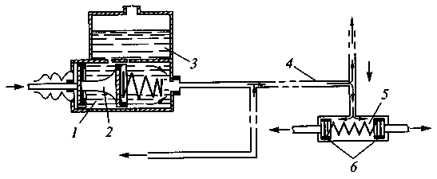

Тема 11
Жидкости
для тормозной системы
Для гидротормозной системы автомобиля (рис. 1)
производят тормозные жидкости на касторовой и гликолевой основе.

Рис. 1. Схема гидравлического привода тормозной системы автомобиля:
1 — главный
цилиндр; 2 — поршень главного цилиндра; 3 — резервуар
с жидкостью; 4 — трубопровод; 5 — рабочий цилиндр; 6
— поршни рабочего цилиндра.
Тормозные
жидкости
Тормозные
жидкости (жидкости для гидравлического привода тормозного механизма) служат в
качестве рабочего элемента для передачи усилия от педали тормозного механизма
до колодок.
К
тормозным жидкостям предъявляются следующие требования:
—
не должны вызывать коррозии металлических деталей, набухания и разрушения
резины;
—
должны обладать хорошими вязкостно-температурными и смазывающими свойствами;
—
иметь высокую температуру кипения;
—
быть стабильными (не расслаиваться и не выделять осадки, не вспениваться).
Тормозные
жидкости производят на касторовой и гликолевой основе, их свойства улучшают
присадками.
Тормозные
жидкости на касторовой основе представляют собой растворы спиртов и касторового
масла. Они имеют хорошие смазывающие свойства и не вызывают набухания и
разрушения резиновых деталей.
Тормозные
жидкости на касторовой основе
БСК
— 50 % бутилового спирта и 50 % касторового масла.
ЭСК
— 40 % этилового спирта и 60 % касторового масла.
АСК
— 60 % изоамилового спирта и 40 % касторового масла.
Жидкости
марок БСК, ЭСК, АСК рекомендуется применять при температуре не ниже —20 °С, так
как при более низких температурах происходит расслоение спирта и касторового
масла. Их температура кипения 115 °С, цвет от красного до оранжевого.
Тормозные
жидкости на гликолевой основе
ГТЖ-22М
— смесь гликолей с противокоррозионной присадкой, имеет хорошие
низкотемпературные свойства, легко смешивается с водой и при обводнении не
теряет работоспособности, однако обладает недостаточными смазывающими
свойствами; температура кипения не ниже 190 °С; работоспособна до температуры
—50 °С; имеет зеленый цвет, прозрачная.
Тормозные
жидкости с аналогичными свойствами — «Томь» и «Роса», их температуры кипения
220 и 260 °С соответственно, имеют светло-желтый цвет.
Тормозная
жидкость «Нева» имеет температуру кипения 190 °С, работоспособна до температуры
—50 °С, цвет — желтый.
Все
тормозные жидкости гигроскопичны. В процессе эксплуатации из-за колебаний
температуры в тормозную систему проникает влага через резиновые уплотнители, в
результате снижается температура кипения тормозной жидкости. Для тормозной
жидкости «Нева» температура кипения становится критической примерно через год,
для тормозной жидкости «Томь» — примерно через два года, а для тормозной
жидкости «Роса» — через три года. Снижение температуры кипения при интенсивном
пользовании тормозными механизмами приводит к образованию паровых пробок в
тормозной системе и ее отказу. Регулярная замена тормозной жидкости является
гарантией работоспособности тормозной системы.
Гликолевые
тормозные жидкости ядовиты и при работе с ними нужно соблюдать такие же меры
предосторожности, как и при работе с низкозамерзающей жидкостью.
Нельзя
смешивать между собой спиртокасторовые и этилен-гликолевые тормозные жидкости,
так как они полностью теряют свои качества и становятся непригодны к работе.
ЭКСПЛУАТАЦИОННЫЕ
ТРЕБОВАНИЯ
ТЕМПЕРАТУРА
КИПЕНИЯ
Основным
параметром тормозной жидкости является ее температура кипения — чем она выше,
тем лучше для тормозной системы. Закипевшая тормозная жидкость пузырится и
эффективность тормозной системы снижается.
Чем
она выше, тем меньше вероятность образования паровой пробки в системе. При
торможении автомобиля рабочие цилиндры и жидкость в них нагреваются. Если
температура превысит допустимую, ТЖ закипит, и образуются пузырьки пара.
Несжимаемая жидкость станет «мягкой», педаль «провалится», а машина не
остановится вовремя.
Пузырьки
пара вытесняют некоторую ее часть в расширительный бачок ГТЦ. В системе
остается жидкость, перемешанная с пузырьками пара. Но если сама жидкость
несжимаема, то микроскопические пузырьки как раз хорошо сжимаются. И теперь
передаваемое давление в первую очередь пойдет на сжатие пузырьков во всем
объеме. Как это будет выглядеть для водителя: педаль тормоза станет мягкой,
провалится, а торможения нет.
Температура
кипения тормозной жидкости напрямую зависит от содержания в ней воды, и с
повышением ее концентрации снижается. Поэтому тормозная жидкость должна
обладать минимальной гигроскопичностью (влагопоглощением). Кроме этого, влага в
системе способствует коррозии цилиндров, а в холодное время — и образованию
ледяных пробок.
Наличие
в тормозной жидкости всего 2-3 процентов воды снижает температуру ее кипения
примерно на 70 градусов. На практике это означает, что при торможении DOT-4,
например, закипит, не разогревшись и до 160 градусов, в то время как в «сухом»
(то есть без влаги) состоянии это произойдет при 230 градусах. Последствия
будут такие же, как если бы в тормозную систему попал воздух: педаль становится
колом, тормозное усилие резко ослабевает.
ВЯЗКОСТЬ
Характеризует
способность жидкости прокачиваться по системе. Температура окружающей среды и
самой ТЖ может быть от минус 40°С зимой в неотапливаемом гараже (или на улице)
до 100°С летом в моторном отсеке (в главном цилиндре и его бачке), и даже до
200°С при интенсивном замедлении машины (в рабочих цилиндрах). В этих условиях
изменение вязкости жидкости должно соответствовать проходным сечениям и зазорам
в деталях и узлах гидросистемы, заданным разработчиками автомобиля.
Замерзшая
(вся или местами) ТЖ может блокировать работу системы, густая — будет с трудом
прокачиваться по ней, увеличивая время срабатывания тормозов. А слишком жидкая
— повышает вероятность течей.
А
что будет если жидкость не обладает достаточной морозостойкостью, то есть резко
меняет свои свойства при понижении температуры или просто замерзает?
Наиболее
критичным параметром при этом становится вязкость — если она увеличится, то
заметно возрастет время срабатывания тормозов.
В
стандарте, разработанном Международным объединением инженеров транспорта (SAE),
прямо указано, что вязкость тормозной жидкости при -40С не должна превышать
1800 сСт (мм2/с).
ВОЗДЕЙСТВИЕ
НА РЕЗИНОВЫЕ ДЕТАЛИ
Уплотнения
не должны разбухать в ТЖ, уменьшать свои размеры (давать усадку), терять
эластичность и прочность больше, чем это допустимо. Распухшие манжеты
затрудняют обратное перемещение поршней в цилиндрах, поэтому не исключено
подтормаживание автомобиля. С усевшими уплотнениями система будет негерметичной
из-за утечек, а замедление — неэффективным (при нажатии педали жидкость
перетекает внутри главного цилиндра, не передавая усилие тормозным колодкам).
ВОЗДЕЙСТВИЕ
НА МЕТАЛЛЫ
Детали
из стали, чугуна и алюминия не должны корродировать в ТЖ. Иначе поршни
«закиснут» или манжеты, работающие по поврежденной поверхности, быстро
износятся, а жидкость вытечет из цилиндров либо будет перекачиваться внутри
них. В любом случае гидропривод перестает работать.
СМАЗЫВАЮЩИЕ
СВОЙСТВА
Чтобы
цилиндры, поршни и манжеты системы меньше изнашивались, тормозная жидкость
должна смазывать их рабочие поверхности. Царапины на зеркале цилиндров
провоцируют течи ТЖ.
СТАБИЛЬНОСТЬ
Устойчивость
к воздействию высоких температур и окислению кислородом воздуха, которое в
нагретой жидкости происходит быстрее. Продукты окисления ТЖ разъедают металлы.
ГИГРОСКОПИЧНОСТЬ
Склонность
тормозных жидкостей на полигликолевой основе поглощать воду из атмосферы. В
эксплуатации — в основном через компенсационное отверстие в крышке бачка. Чем
больше воды растворено в ТЖ, тем раньше она закипает, сильнее густеет при
низких температурах, хуже смазывает детали, а металлы в ней корродируют
быстрее.
Тормозные жидкости классифицируют по
температуре закипания и вязкости по нормам DOT (Department of Transportation),
принятым министерством транспорта США. При этом учитывается температура кипения
жидкости без примесей влаги (сухой), и содержащей до 3,5% воды. Вязкости - два
показателя при температуре +100°C и –40°C. Смотрите таблицу ниже, где эти
показатели представлены (соответствуют американскому федеральному стандарту).
Сходные требования предъявляются и другими, международными и национальными
стандартами, – ISO 4925, SAE J1703 и другие. В странах СНГ единого стандарта,
регламентирующего показатели качества тормозных жидкостей, не существует,
поэтому производители работают по своим техническим условиям.
Типы
тормозных жидкостей
Тормозные жидкости –
высокотехнологичный продукт, который состоит из основы (ее доля 93-98%) и
различных добавок, присадок, иногда красителей (2-7%).
1.
Гликолевые (DOT 3, DOT 4, DOT 5.1)
Тормозные
жидкости, имеющие в качестве основы полигликоли и их эфиры – группы химических
соединений на основе многоатомных спиртов. У них высокая температура кипения,
хорошие вязкостные и удовлетворительные смазывающие свойства. Основным
недостатком гликолевых жидкостей является гигроскопичность – склонность
поглощать воду из атмосферы.
В
эксплуатации это в основном происходит через компенсационное отверстие в крышке
бачка главного тормозного цилиндра. Чем больше воды растворено в тормозной
жидкости, тем ниже ее температура кипения, больше вязкость при низких
температурах, хуже смазываемость деталей и сильнее коррозия металлов.
2.
Минеральные
Представляют
собой различные смеси в пропорции 1:1 касторового масла и спирта, например
бутилового (красно-оранжевая жидкость «БСК»). Такие жидкости обладают хорошими
смазывающими и защитными свойствами, негигроскопичны, не агрессивны к
лакокрасочным покрытиям. Но они не соответствуют международным стандартам по
основным показателям: имеют низкую температуру кипения (их нельзя применять
на машинах с дисковыми тормозами) становятся слишком вязкими уже при минус
20°С.
3.
Силиконовые (DOT 5)
Изготавливаются
на основе кремний-органических полимерных продуктов. Их вязкость мало зависит
от температуры, они инертны к различным материалам, работоспособны в диапазоне
температур от –100 до +350°С и не адсорбируют* влагу. Их применение в частности
ограничивают недостаточные смазывающие свойства.
Силиконовые
жидкости класса DOT 5 следует отличать от гликолевых DOT 5.1, так как сходство
наименований может привести к путанице. Для этого на упаковке дополнительно
обозначают:
DOT 5 – SBBF («silicon
based brake fluids» — тормозная жидкость, основанная на силиконе)
DOT 5.1 – NSBBF («non
silicon based brake fluids» — тормозная жидкость, не основанная на силиконе).
Применение
различных классов тормозных жидкостей:
- DOT 3 –
на относительно тихоходных автомобилях с тормозами барабанного типа или
передними дисковыми;
- DOT 4 – на современных быстроходных автомобилях с дисковыми тормозами на всех
колесах;
- DOT 5.1 – на спортивных автомобилях, с более значительными тепловыми
нагрузками. Жидкости этого класса на обычных автомобилях практически не
применяются.
ПРОВЕРКА И
ЗАМЕНА
На
современных автомобилях в основном применяются гликолевые тормозные жидкости,
которые имеют целый ряд преимуществ. Но, к сожалению, за год гликоль заберет из
воздуха до 2-3% влаги, и жидкость приходится периодически менять, причем
заблаговременно, пока она стала представлять опасности для надежной работы
тормозной системы. (см. рис). Периоды замены обычно указывают в инструкции по
эксплуатации автомобиля, которые составляют от 1 до 3 лет.

Дать
объективную оценку свойствам тормозной жидкости можно только в лабораторных
условиях, поэтому для экономии времени состояние тормозной жидкости оценивается
визуально. Оценивается ее прозрачность, однородность, отсутствие осадка. Есть
также приборы для определения температуры кипения тормозной жидкости и степени
ее увлажнения.
Поскольку
жидкость в системе не циркулирует, то ее состояние в бачке (месте проверки)
может отличаться от той, что находится в колесных цилиндрах. В бачке она может
набирать влагу из воздуха, а в тормозных механизмах - нет. Но там жидкость
нагревается сильнее, иногда чрезмерно, и ее свойства могут ухудшиться.
Если
просто добавлять новую тормозную жидкость при прокачке системы после ремонтных
работ, то ситуацию это практически не исправит, значительная часть объема не
поменяется.
Жидкость нужно менять полностью. Последовательность и особенности замены
тормозной жидкости, например при прокачке с работающим двигателем, зависит от
конструкции тормозной системы (тип усилителя, наличие антиблокировочных устройств
и т.д.). Такую информацию можно найти в руководстве по эксплуатации автомобиля.
Контрольные
вопросы
1.
Какие требования предъявляются к тормозным жидкостям?
2.
Назовите марки тормозных жидкостей. Что является их основой?